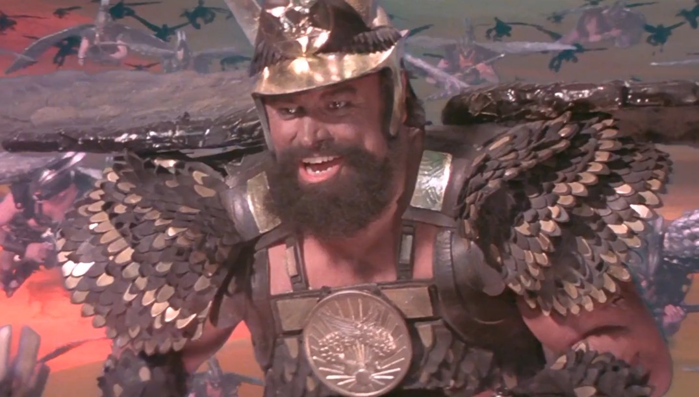

From a Weekend Idea
to a Working VSIX
~50 AI sessions · 7 days · ~$100
Cleared for Takeoff
Fixing slow Unreal debugging—and accidentally logging 4,000+ turns in the cockpit. 🛫
UE5 + F5 = Tea break time 🍵
A huge chunk of UE5’s startup wait is loading symbols you’ll never touch.
On Demand Symbols: 11 PDBs instead of 950.
Pre-loads breakpoint PDBs; loads call-stack PDBs only when you break.
The project by the numbers.
Seven days, one aborted approach.
Once we bailed out of V1 on Day 2, shipping V2 cost only ~$12. 🪂
Catching a Tailwind
Where AI gave us lift—cracking undocumented APIs, self-testing, and flying in formation.
AI reflected on VS’s own DLLs
when docs didn’t exist.
When docs are missing, yell “DIVE!”—let AI plunge straight into the binaries. 🦅
When testing needs a human,
AI finds a way to self-test.
Ask the AI to build its own test harness—even for GUI apps.
“Fly, my beauties!”
Parallel wingmen cut the wait.
Send wingmen for bulk research—less waiting, zero main-context bloat. 🦅
Turbulence & Headwinds
“Please keep your seatbelts fastened at all times.” 💺
60% of all code written was deleted.
Overspecifying on Day 1 + not asking “why?” drove the churn—surgical edits averaged $0.08.
AI overbuilds. Jettison the baggage.
Pull the ejector seat early—the AI packs your parachute with notes. 🪂
81% of turns cost $11.
1.4% cost $50.
Flash carried 81% of turns (“Gordon’s alive!”)—and 6s turns keep you in flow.
6 compacted sessions caused 71% of spend.
Watch the fuel gauge—split early, stop after 3 retries, and log quirks in AGENTS.md. ⛽
Aviate, Navigate, Communicate
“You were the pilot steering us away from the mountain!”
Never escalate models mid-session.
Don’t swap engines mid-air—land and make a new flight plan. 🛬
Single-focus prompts cost 4× less.
Use a Design Gate before coding, and paste exact output logs for bugs.
Let AI write the rules—then cross-check fresh.
- 01Codify the rules — have AI maintain lean rulebooks (
AGENTS.md,RULES.md) so every session starts smart. - 02Cross-check with another agent — never let the authoring session grade its own work.
- 03Demand deterministic proof — passing tests and benchmarks beat “it should work.”
Cabin crew, doors to automatic and cross-check—fresh eyes catch context drift. ✈️
Mid-flight course corrections. 🎛️
5 pre-flight tips for your next AI project. 📋
- 1.Research & rules first —
AGENTS.mdand cheap subagents beat guessing. - 2.Fast workhorse models by default — frontier only in fresh sessions.
- 3.Fear compaction — split early, prompt single-focus, cross-check fresh.
- 4.Start minimal, iterate — surgical edits cost pennies; giant specs churn.
- 5.Your highest-leverage skill is deletion.
Full disclosure: first time “vibe coding” in anger — I’m still winging it. 🤷♂️
Uncharted Airspace
“Surely you can’t be serious?” “I am serious… and don’t call me Shirley.”
What’s the cost of the fuel? 🌍
The ethical bill behind “effortless” code.
- 01Training data — uncredited open source & “license laundering”.
- 02Energy & water — agentic loops multiply the footprint.
- 03Changing the job — fewer junior runways, more code auditing.
Cheap tokens still have a real-world bill.
Small tools are easy. Big codebases? 🏗️
Will it still make sense in two years?
- 01Humans own the architecture.
- 02Can’t explain it? Don’t merge it.
- 03Context is code — stale docs mislead agents.
Code is cheap. Understanding isn’t.
What should we still code ourselves? ✍️
Resisting the urge to let AI do everything.
- 01Keep the hard thinking — architecture, algorithms, threading.
- 02Debug first, ask second.
- 03Delegate the drudge — boilerplate, glue, SDK archaeology.
Pilots still hand-fly to stay current. ✈️
Keeping the human in the crew. 🧑🤝🧑
Sharing knowledge with each other, not just with AI.
- 01Share the flight logs — rules and decisions, not just code.
- 02Explain it to a human.
- 03Mentor judgement, not syntax.
Use the time AI saves to talk more, not less.
Questions we should also be asking. 🧭
- 1.Is it actually faster? Feeling fast ≠ shipping fast.
- 2.Who reviews the flood?
- 3.Where do the next seniors come from?
- 4.Who owns the bugs?
- 5.What happens when the subsidies end?
Reading the Black Box
“This is your autopilot speaking. I’ve reviewed my own flight logs, and I’m delighted to report I was brilliant.”
Self-reflection & vibe decking.
The bots analysed all 50+ chat logs, generated these slides, and had them cross-checked by another member of the cabin crew.
Questions? 🙋♂️
Come and talk to me or message me on Teams.
(If they’re hard, I’ll defer to my co-pilot, Claude.)

“Hawkmen, DIVE!”
— Prince Vultan (Brian Blessed), Flash Gordon (1980)